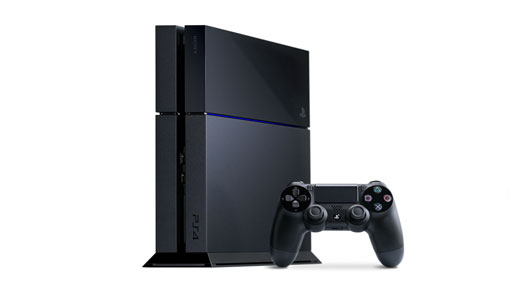

Xbox One es la tercera videoconsola de sobremesa de la marca Xbox producida por Microsoft. Forma parte de las videoconsolas de octava generación, fue presentada por Microsoft el 21 de mayo de 2013. Es la sucesora de la Xbox 360 y actualmente compite con la PlayStation 4 de Sony y la Wii U de Nintendo. Su salida a la venta fue el 22 de noviembre de 2013 a un precio de 499 dólares.
Play Station 4

PlayStation 4 (oficialmente abreviada como PS4) es la cuarta videoconsola del modelo PlayStation. Forma parte de las videoconsolas de octava generación. Fue anunciada oficialmente el 20 de febrero de 2013 en el evento PlayStation Meeting 2013, aunque el diseño de la consola no fue presentado hasta el 10 de junio en el E3 2013. Es la sucesora de la PlayStation 3 y actualmente compite con la Xbox One de Microsoft y la Wii U de Nintendo. Su lanzamiento fue el 15 de noviembre de 2013 en Estados Unidos y en Europa y Latinoamérica fue el 29 de noviembre de 2013, 8 mientras que en Japón fue el 22 de febrero de 2014.2
Wii U

Wii U, los creadores le han referido como "Nosotros y tú". Es una futura videoconsola creada por Nintendo, y la directa sucesora de Wii. La consola fue lanzada a finales de 2012.